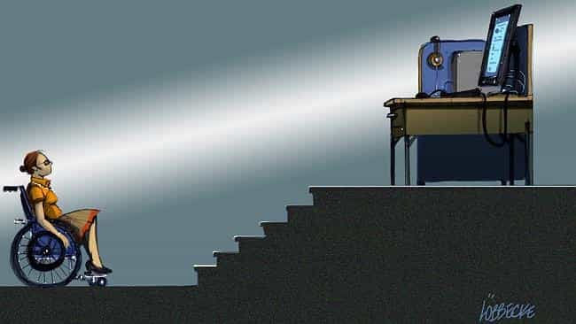
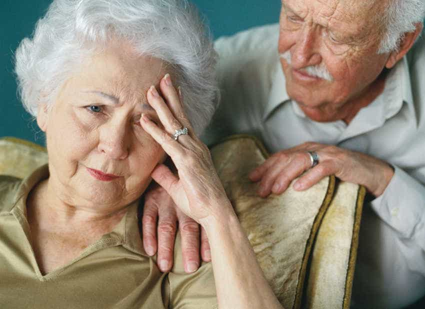
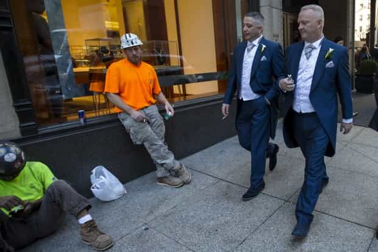
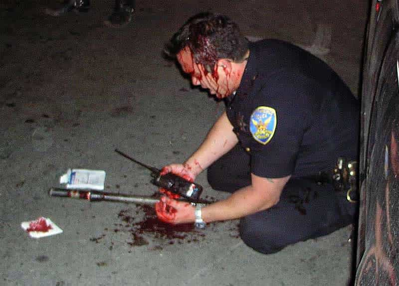

< < < Back
4 Groups Of People SJWs Don’t Care Or Talk About – Return Of Kings
As we battle against SJWs and their egregious positions, we have the habit of challenging them only for what they support. This is certainly necessary, but one thing we need to pay more attention to is who they do not support, who they deliberately ignore, and who never even crosses their minds.
These four groups do not form by any means an exhaustive list of the kicked around and forgotten. Yet they do very saliently represent the sort of people with whom society’s biggest sympathies should lie. The fact that their discarded needs and ignored services are so obvious makes SJWs’ disdain for them all the greater.
1. The Disabled

The wage gap is a myth, completely explained by women’s choices to pursue less skilled occupations, take more vacation time, and work less overtime. So, too, is the “rape” crisis on college campuses, whereby anything from wolf-whistling to asking a girl out when she does not like you equals “harassment.”
Unlike these false statistics, however, the disabled suffer the highest level of poverty of any group. In my native Australia, the figure is around 50%. The plight of America’s disabled is comparable: they are twice as likely to live in economic squalor. Even these pitiful outcomes would no doubt be a lot worse if many disabled individuals did not receive significant support from family and friends. Yet supposed “sexism” in video games and other fabricated mole hills have received 100 times more attention from SJWs over the last five years.
So how can we explain or justify the almost complete SJW silence on this disability shame? Supposedly students paying off education loans are some the biggest victims of the “crooked” financial system, but barely a thought is kept for those disabled people who have no or only a limited chance to gain an education, let alone get a long-term job to support themselves. The last thing I wish to do is underestimate the often untapped capabilities of disabled individuals. Many have disabilities that do not generally interfere with the job they currently have.
That said, many are greatly impacted, impeded or even prevented from living a full life by their conditions. No amount of positive thinking and inclusion can change the fact that so frequently they live objectively terrible lives, especially in material terms. So why does their incontrovertible, quantifiable plight receive just an iota of the attention, and usually only for cosmetic purposes, given to privileged white upper middle-class college girls?
2. Senior Citizens

Socialist Bernie Sanders may look older than your great-grandmother. Hillary Clinton may be 70 next year. Big deal. On the whole, SJWs do not give a damn about senior citizens. If they did, they would recognize that, as much younger people, they should get off their backsides and prioritize what limited social security the US has for those who cannot work or have worked all their lives.
If you think life is hard paying for college when you can work, try having to pay for a billion medical pills and bills while you cannot work due to age or other infirmities. I have never in my life met a student in deleterious financial circumstances who was working as hard as they could to alleviate them. I have, in contrast, met at least 500 senior citizens who did not predict rapid extensions in their lifespans, coupled with soaring health costs as they aged.
Let us remember as well that middle-aged and older people overwhelmingly vote for Republicans. Focusing on pet projects like non-gendered bathrooms is much, much more important than ensuring that more right-leaning senior citizens have the care that they need. To save face, SJWs group all welfare recipients together as one block. This does not change their natural contempt for older generations. They are simply a means to an end for leftist extremists.
Older people’s actual needs are conflated with other people’s desires to try and justify moronic policy platforms like free college for US students while the country has a $20 trillion national debt, or higher welfare payments for uneducated mothers who popped out three or four kids before they bothered to find a steady job or even finish high school.
3. The White Working Classes

Mitt Romney, worth several hundred million dollars, and the white garbage collector are always seen as the one person: the eternally privileged whit male. Like with senior citizens, the white working classes are shoved in alongside other poorer groups to make Democrats and SJWs look like champions for the economic battlers. The unspoken meaning, nevertheless, is that whites are poor because they choose to be and blacks and others are poor because of history and contemporary oppression.
Underprivileged whites are therefore seen as lazy, not toilers trying to make their way in a world just as difficult as it is for blacks in the same income bracket. SJWs will only came to their “aid” in the weakest sense possible, giving them the most generalized sympathy, all while devoting continual attentions to “special” groups like African-American gang members, illegal immigrants, and transgender prostitutes who cannot find work.
Southern whites in particular should feel aggrieved by the concept of white privilege. Thanks to John Wilkes Booth and several other factors, the South remained economically underfunded from the end of the Civil War until the present day. Reconstruction was the sham of all shams, performed quarter-halfedly for political expediency, not followed through genuinely.
In places such as the United Kingdom, peripheral (and whiter) regions such as Wales and northern England are routinely denigrated when, in fact, their only “crimes” are a) not having the population base to support large economic centers and b) being ignored for countless years by the government in London when it came to funding, infrastructure and other economic stimuli.
4. The Police

I take that back. SJWs do not ignore police; they devote inordinate amounts of time to undermining them! Police in the United States do not have a proper right to defend themselves, most notably when their assailants are black or SJWs themselves. To SJWs, they are murderers and rapists (usually because of one bad egg per 10,000 cops). What they are entitled to instead is a barrage of criticisms, consistent abuse, and threats from those who are basically saying society would be better off without the direct enforcement of laws.
Issues such as PTSD amongst police officers are also routinely swept under the carpet, in favor of self-serving narratives, such as gay and transgender people suffering appalling “mental illnesses” because of discrimination on college campuses. It would seem that these same campuses, which are the biggest champions of LGBT interests and special privileges, are more dangerous than the streets of Camden, NJ, St. Louis, MO, or Detroit, MI.
If you want an interesting account of how a would-be anarchist realized the error of his ways, read about Harvard scientist, psychologist, and linguist Steven Pinker’s transformation. Having witnessed the effects of the Montreal police strike, namely chaos and unprecedented criminality, he changed his outlook about the need for armed authority. Sadly, this was in the 1960s and the current breed of leftists are seemingly impervious to any lessons from life, not to mention elementary school age logic. It would probably take social disorder ten times more intense and hundred times wider than what Pinker observed for contemporary SJWs to undergo the same ideological reversal.
The cancellation of a feminist dance class is more hurtful for SJWs than the situations of those needing actual help
Nothing should really surprise you anymore. The wants of the narcissistic outweigh the needs of the needy or those who deserve our support and admiration. Inasmuch as I counsel against you getting into almost always pointless arguments with SJWs, I hope this article can add fuel to the fire in any retorts you give back to them.
Things invariably tend to get worse with SJW-generated trends, so what you should expect is an even higher ignorance towards those our society should be focusing on. Attention is a drug for the worst feminists and other leftists: the more they get of it now, the higher the dose they require in the future. The disabled, old people, poor whites, and embattled police forces all lower the personal vanity upon which SJWs depend.
Read More: Why Do SJWs Like Game Of Thrones When It Stands For Everything They’re Against?